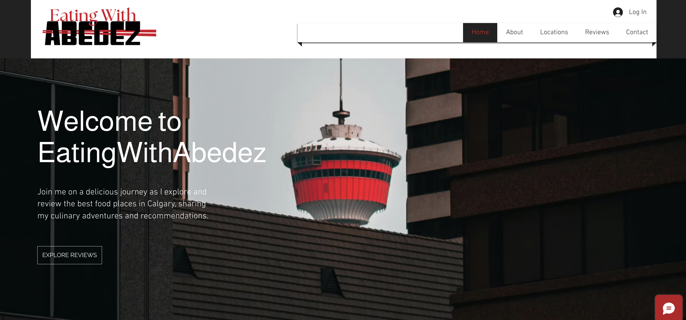
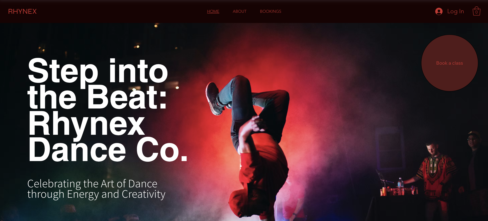
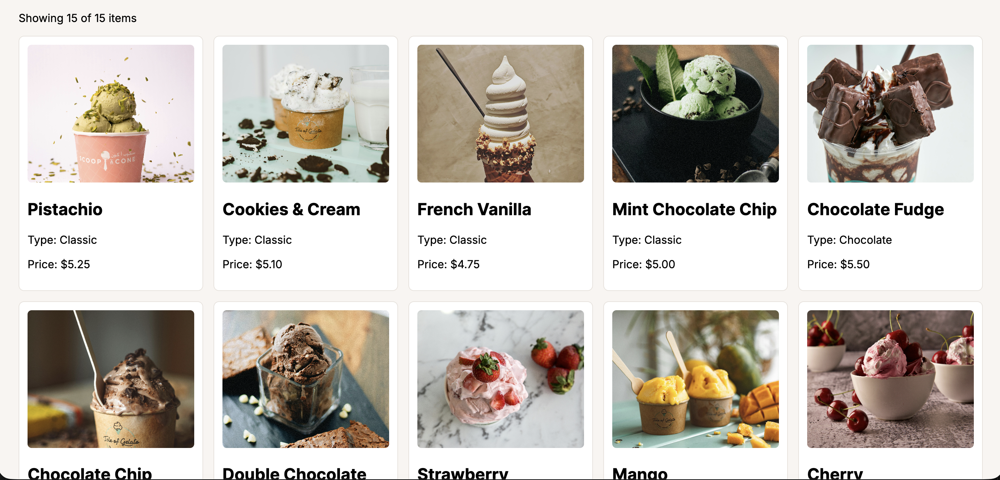
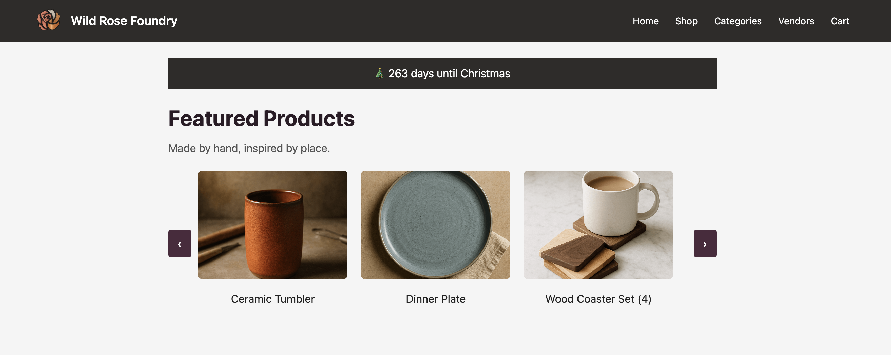

Selected Work

CPRG 218 Final Website
This project is a responsive website that I designed and developed using HTML and CSS. The main focus was creating a clean and organized layout while improving my understanding of spacing, alignment, and typography. I worked on making sure the design looked consistent across different screen sizes and devices. Through this project, I strengthened my front-end development skills and learned how to structure content in a more user-friendly way.

Eating With Abedez Website
This website was created using Wix with cms implementation and focuses on visual storytelling and content presentation. I designed the layout to be visually engaging while keeping the navigation simple and easy to use. I experimented with images, spacing, and sections to guide the user through the content in a clear way. This project helped me improve my skills in branding, layout design, and creating a cohesive visual style.

Rhynex Web Design
This project was built using Wix Studio and focuses on creating a more modern and polished web design. I explored different layout structures and worked on making the design responsive and visually consistent. I paid attention to details like alignment, color usage, and spacing to create a professional look. This project helped me better understand how to build more refined and structured interfaces.

Catalogue Web Application
This project is a catalogue-style web application that displays product information in a clear and organized layout. I focused on creating a structured interface that is easy to navigate and understand. Using HTML and CSS, I worked on layout consistency and grouping content in a way that improves readability. This project helped me develop my ability to design interfaces that handle larger amounts of information.

Interactive Final Project
This is an interactive web project that uses JavaScript to create dynamic elements and user interaction. I focused on making the experience more engaging by adding features that respond to user input. The project allowed me to practice combining design with functionality, while also improving my problem-solving skills. It helped me understand how interactivity can enhance the overall user experience.